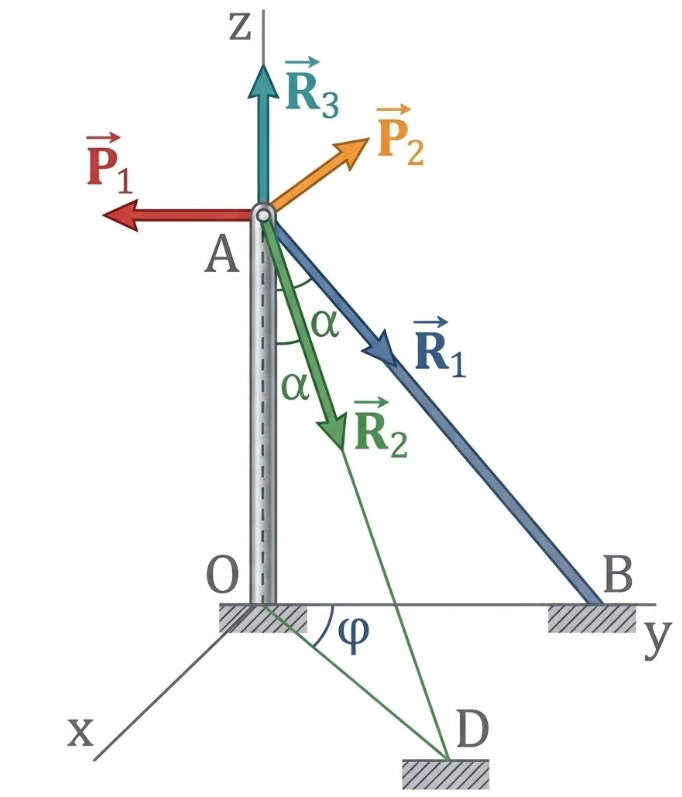
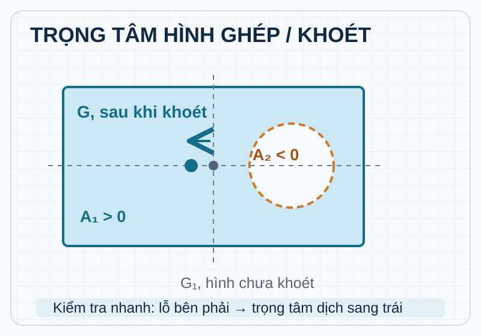
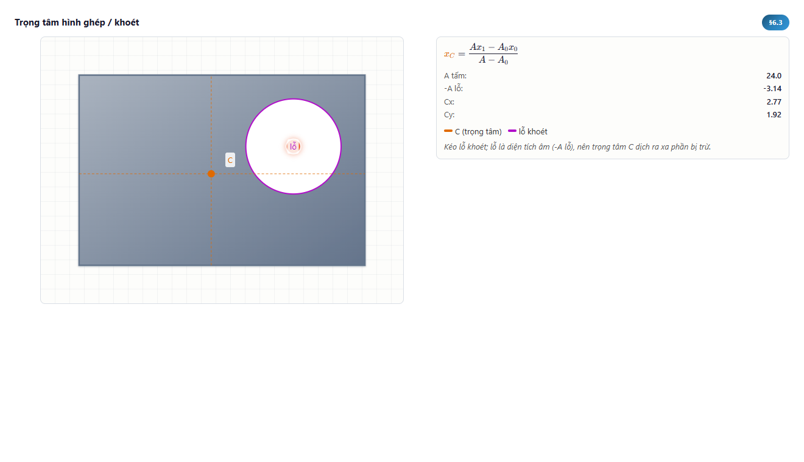
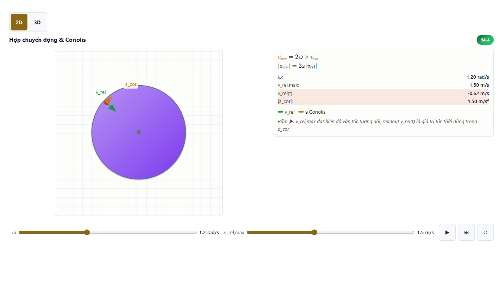
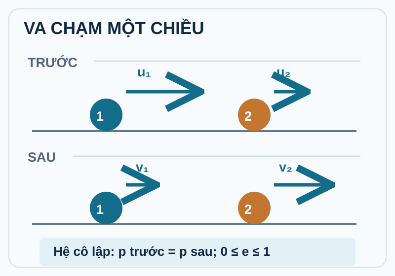
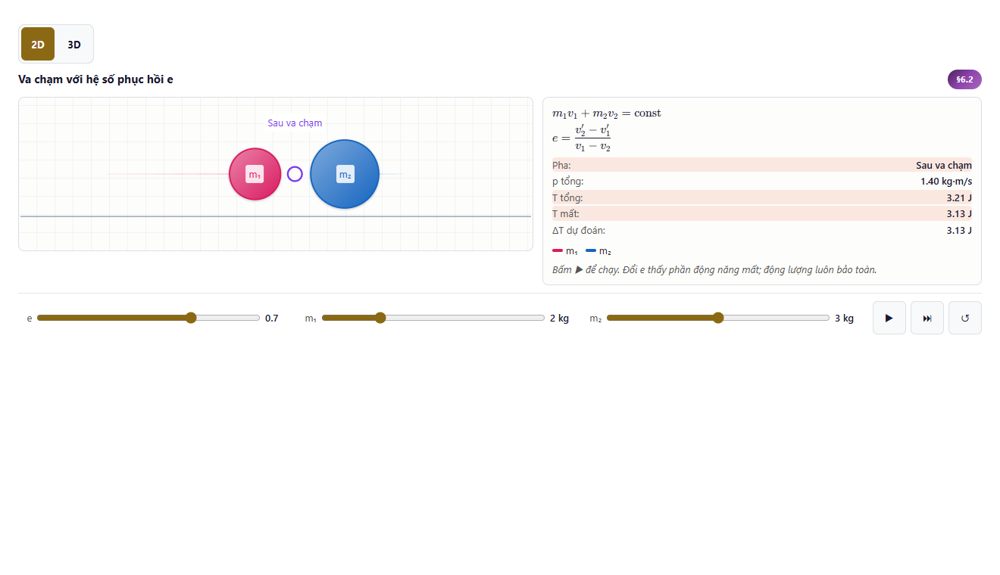
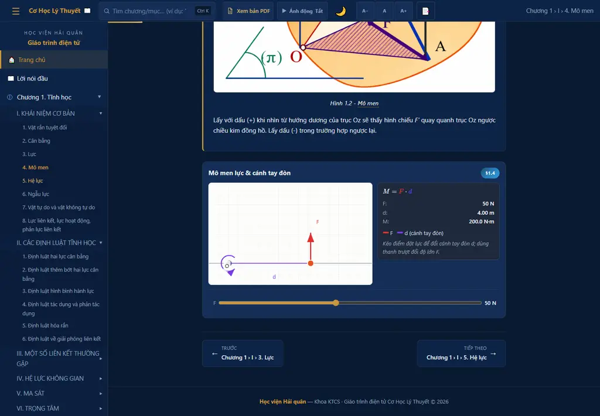

Số liệu mô tả phạm vi hiện vật: Tĩnh học, Động học, Động lực học; không tự chứng minh chất lượng hay hiệu quả học tập.
45 · Tĩnh học · Lực, mô men, cân bằng, ma sát và trọng tâm
29 · Động học · Chuyển động điểm, vật rắn và hợp chuyển động
31 · Động lực học · Lực, động lượng, năng lượng và va chạm
108 · mục/trang hiển thị
127 · tham chiếu hình duy nhất
1.302 · tham chiếu công thức
300 · câu tự kiểm tra

Ảnh minh họa: Một học liệu số cho ba mạch kiến thức
BÁO CÁO KẾT QUẢ04
Vòng học hỗ trợ tự học
Thiết kế hướng tới vòng học gồm định hướng, nội dung, quan sát hoặc thao tác, tự kiểm tra và điều chỉnh.
01
Định hướng
Xác định nội dung và nhiệm vụ học tập
02
Học nội dung
Đọc lý thuyết, công thức, hình và giả thiết
03
Quan sát
Xem hoặc thay đổi tham số trong mô phỏng
04
Tự kiểm tra
Nhận phản hồi ngay sau khi chọn câu trả lời
05
Điều chỉnh
Quay lại nội dung; lưu tiến độ, ghi chú và dấu trang
↶Từ điều chỉnh quay lại nội dung để xem lại kiến thức liên quan
Giới hạn diễn giải: Khả năng vận hành xuyên suốt và hiệu quả đối với người học chưa được xác nhận; câu hỏi tự kiểm tra không phải phép đo chính thức về mức đạt chuẩn đầu ra.
Mã QR mở bản web để trình diễn; bản web chưa được chứng minh đồng nhất với ứng viên đang kiểm tra.
01 · Đọc nội dung · Xem cấu trúc ba chương, hình, công thức và tài liệu đối chiếu
02 · Quan sát mô phỏng · Thay đổi tham số và xem giá trị hiển thị theo mô hình
03 · Tự kiểm tra · Làm câu hỏi và nhận phản hồi trong cùng môi trường
04 · Giới hạn · Chưa chứng minh đồng nhất với ứng viên đang kiểm tra; không thay thế kiểm tra gói ứng viên
Ảnh minh họa: Mã QR trải nghiệm trực tuyến
BÁO CÁO KẾT QUẢ06
Ca đối chiếu khoa học 1 · Trọng tâm diện tích
Với hình phẳng ghép, tọa độ trọng tâm diện tích được tính từ tổng mô men diện tích; phần khoét dùng diện tích có dấu âm.
Tĩnh học · Tọa độ trọng tâm diện tích · x̄ = Σ(Aᵢxᵢ)/ΣAᵢ; ȳ = Σ(Aᵢyᵢ)/ΣAᵢ · Phần khoét dùng diện tích có dấu âm trong phép tính.
Ca minh họa · chưa thẩm định độc lập

Ảnh minh họa: Tĩnh học · sơ đồ nguyên lý

Ảnh minh họa: ch1-6-3 · ảnh chụp khi mô phỏng đang chạy
BÁO CÁO KẾT QUẢ07
Ca đối chiếu khoa học 2 · Gia tốc Coriolis
Mô phỏng thể hiện aCor = 2(ω × vrel); aCor, ω và vrel đều là vectơ. Đây không phải toàn bộ gia tốc.
Động học · Thành phần gia tốc Coriolis · aCor = 2(ω × vrel) · |aCor| = 2ω|vrel| khi ω ⟂ vrel · Trường hợp phẳng: ω ⟂ vrel nên |aCor| = 2ω|vrel|. Đây là một thành phần, không phải toàn bộ gia tốc.
Ca minh họa · chưa thẩm định độc lập
Ảnh minh họa: Động học · sơ đồ nguyên lý

Ảnh minh họa: ch2-4-4 · ảnh chụp khi mô phỏng đang chạy
BÁO CÁO KẾT QUẢ08
Ca đối chiếu khoa học 3 · Va chạm thẳng một chiều
Trong mô hình va chạm thẳng một chiều thụ động, tổng động lượng được bảo toàn khi xung lực ngoài theo phương va chạm không đáng kể.
Động lực học · Va chạm thẳng một chiều · m₁u₁ + m₂u₂ = m₁v₁ + m₂v₂ · Với 0 ≤ e ≤ 1; tổng động lượng bảo toàn khi xung lực ngoài theo phương va chạm không đáng kể.
Ca minh họa · chưa thẩm định độc lập

Ảnh minh họa: Động lực học · sơ đồ nguyên lý

Ảnh minh họa: ch3-6-2 · ảnh chụp khi mô phỏng đang chạy
BÁO CÁO KẾT QUẢ09
Minh họa thao tác · Mô men của lực
Trong ca cố định θ = 90°, với F = 50 N và d⊥ = 4,00 m, M_O = +200 N·m nếu quy ước ngược chiều kim đồng hồ là dương.
00:00–00:15 · Mở bài · Chương 1 › Mô men của lực
00:15–00:30 · Xác định hình học · Điểm O cố định; θ = 90°; d⊥ là khoảng cách vuông góc
00:30–01:00 · Thay đổi cánh tay đòn · Giữ F = 50 N; kéo điểm đặt lực đến d⊥ = 4,00 m
01:00–01:15 · Đọc kết quả · F = 50 N → M_O = +200 N·m
01:15–01:30 · Đối chiếu nguồn · Mở PDF cục bộ, đối chiếu công thức rồi quay lại bài

Ảnh minh họa: Minh họa thao tác · Mô men của lực
BÁO CÁO KẾT QUẢ10
Từ nguồn chuẩn đến gói có thể kiểm tra
Tạo hiện vật → kiểm chứng → phê duyệt: ba việc riêng, có đầu ra để đối chiếu.
01Chốt mục tiêu→
02Thiết kế mô hình→
03Sản xuất, tích hợp→
04Kiểm tra, chỉnh sửa→
05Đóng gói, xin duyệt
Mô phỏng · Phụ lục 20
25 vị trí 2D; 10 trong số đó có 3D thử nghiệm. Mô hình → trạng thái → hình → đối chiếu nghiệm.
Đa phương tiện · Phụ lục 21
20 GIF có PNG dự phòng. Video/âm thanh là phương án bổ sung sau khi duyệt phạm vi, không phải kết quả đã làm.
Đóng gói · Phụ lục 22
Web tĩnh và tài nguyên cục bộ → ZIP, phiên bản, SHA-256. Kiểm gói không thay kiểm trên LMS hoặc phê duyệt.
Tra cứu, tự đánh giá · Phụ lục 23
Chỉ mục tiếng Việt và 300 câu phản hồi cục bộ hỗ trợ tự học; không phải sổ điểm hay bằng chứng đạt đầu ra.
Giới hạn diễn giải: Pipeline kỹ thuật bắt đầu từ nguồn và dữ liệu có thẩm quyền: nội dung Word được trích xuất rồi đối chiếu; câu hỏi, GIF và mô phỏng được biên soạn hoặc sản xuất riêng, không tự sinh hết từ Word.
Hiện vật mức ứng viên đã hình thành; vận hành xuyên suốt, hiệu quả học tập, xác nhận học thuật và phát hành chưa được xác nhận.
Hiện vật · Học liệu số cho ba mạch kiến thức đã được xây dựng ở mức ứng viên
Cấu trúc · Nội dung, mô phỏng và tự kiểm tra đã được bố trí trong cùng học liệu
Đối chiếu · Có dữ liệu phạm vi và ba ca minh họa để Hội đồng xem xét
Chưa có ký xác nhận học thuật độc lập trong hồ sơ hiện hành.
4/4 chuẩn đầu ra vẫn là dự kiến sơ bộ.
Chưa có dữ liệu chứng minh hiệu quả học tập đối với người học.
9 phép kiểm tra trong snapshot dừng vì môi trường thiếu Chromium; 4 thẩm định hoặc kiểm tra độc lập chưa thể thực hiện.
BÁO CÁO KẾT QUẢ12
Bốn nội dung xin ý kiến góp ý
Nhóm tác giả xin góp ý dựa trên các ca khoa học, vòng học, điều kiện–tiêu chí đầu ra và ba câu hỏi đại diện đang hiển thị.
01 · Tính đúng khoa học · Công thức, giả thiết, đơn vị, mô hình và giới hạn áp dụng
02 · Cách tổ chức học · Trình tự nội dung, mức dễ hiểu, thao tác và phản hồi
03 · Đầu ra và câu hỏi · Xem điều kiện và tiêu chí tại Phụ lục 14; xem ba câu hỏi đại diện bên dưới
04 · Nội dung cần hoàn thiện · Điểm cần sửa, bổ sung minh chứng hoặc điều chỉnh cách trình bày
Tĩnh học · Mô men của lực đối với một điểm phụ thuộc vào: · Cường độ lực và khoảng cách vuông góc · data/quiz-ch1.json#quiz-ch1-005
Động học · Gia tốc Coriolis xuất hiện khi: · Kéo theo quay và vrel ≠ 0 · data/quiz-ch2.json#quiz-ch2-026
Động lực học · Va chạm mềm (không đàn hồi): sau va chạm 2 vật: · Dính vào nhau, cùng vận tốc · data/quiz-ch3.json#quiz-ch3-018
BÁO CÁO KẾT QUẢ13
Đề nghị ghi nhận việc xây dựng hiện vật
Đề nghị ghi nhận việc đã xây dựng hiện vật và cho ý kiến; không đề nghị chấp thuận học thuật, nghiệm thu cuối cùng hoặc phát hành.
GHI NHẬN VIỆC XÂY DỰNG · Hiện vật học liệu số cho ba mạch kiến thức đã được tạo lập ở mức ứng viên.
CHO Ý KIẾN CHUYÊN MÔN · Góp ý về tính đúng khoa học, cách tổ chức học và mức dễ hiểu.
ĐỊNH HƯỚNG HOÀN THIỆN · Nêu các nội dung cần sửa, bổ sung hoặc tiếp tục kiểm chứng.
Dự thảo biên bản: Hội đồng ghi nhận nhóm tác giả đã xây dựng hiện vật giáo trình điện tử ở mức ứng viên và đề nghị tiếp thu ý kiến để hoàn thiện; phiên họp này không kết luận chấp thuận học thuật, nghiệm thu cuối cùng hoặc phát hành.
Phụ lục tra cứu khi Hội đồng yêu cầu
PHỤ LỤC14
Phụ lục · Bốn chuẩn đầu ra dự kiến
Bốn chuẩn đầu ra đang được dùng làm khung liên kết nội dung; toàn bộ vẫn ở trạng thái sơ bộ và chưa có ký xác nhận.
Định hướng học phần · Định hướng học phần · nhận diện · Điều kiện: Khi sử dụng và điều hướng giáo trình điện tử. Tiêu chí: nhận diện cấu trúc học phần và nguồn học liệu của cả ba chương. · sơ bộ
Tĩnh học · Tĩnh học · phân tích · Điều kiện: Với một bài toán tĩnh học vật rắn. Tiêu chí: phân tích lực, mô men, liên kết, cân bằng, ma sát và trọng tâm bằng nội dung Chương 1. · sơ bộ
Động học · Động học · xác định · Điều kiện: Với dữ liệu chuyển động của chất điểm hoặc vật rắn. Tiêu chí: xác định đại lượng động học và quan hệ chuyển động bằng nội dung Chương 2. · sơ bộ
Động lực học · Động lực học · giải · Điều kiện: Với một hệ cơ học và các giả thiết đã nêu. Tiêu chí: giải quan hệ lực, động lượng, năng lượng và va chạm bằng nội dung Chương 3. · sơ bộ
Sơ bộ · không có ngoại lệ đánh giá được khai báo · cần cơ sở đào tạo xác nhận trước bản cuối.
PHỤ LỤC15
Phụ lục · Phạm vi của ba ca đối chiếu khoa học
Ba ca đối chiếu khoa học, mỗi chương một ca, là mẫu để xem xét sâu; chưa được thẩm định độc lập và không đại diện cho toàn bộ học liệu.
1
Mẫu được chọn
Mỗi chương một ca đối chiếu khoa học để xem xét sâu
2
Nội dung kiểm tra
Công thức, giả thiết, đơn vị, dấu và giới hạn
3
Phạm vi kết luận
Không suy rộng kết quả sang mọi mục và mọi bài
4
Ý kiến chuyên gia
Ghi rõ phần đã xem và đề nghị chỉnh sửa
Giới hạn diễn giải: Mọi kết luận phải ghi rõ phạm vi đã xem và những phần chưa được lấy mẫu.
Hiện có 0 hồ sơ ký xác nhận; các nội dung học thuật vẫn chờ thẩm định và ghi nhận có thẩm quyền.
Ký xác nhận chuẩn đầu ra
0/4
Xác nhận hoặc sửa từng chuẩn đầu ra dự kiến
Đánh giá tính đúng khoa học
Chờ thẩm định
Ghi phạm vi, nội dung đã xem, nhận xét và đề nghị
Đánh giá cách tổ chức học
Chưa có mục ghi nhận
Xem vòng học, cách giải thích và phản hồi tự kiểm tra
Ý kiến của Hội đồng
Chưa có mục ghi nhận
Ghi kết quả được công nhận và nội dung cần hoàn thiện
Luồng xử lý hồ sơ đề xuất · chưa phải kết quả đã hoàn tất
Hồ sơ→Thẩm định→Đủ căn cứ?
Có → Ghi nhận có thẩm quyền
Chưa → Bổ sung / chỉnh sửa → thẩm định lại
Giới hạn diễn giải: Không đánh dấu hoàn tất nếu chỉ có kiểm thử tự động hoặc trình diễn hiện vật.
Nguồn kiểm tra: BaoCao_KhoaHoc_GiaoTrinhDienTu_CoHocLyThuyet_DaChinhSua.docx#Ma trận chuẩn đầu ra; 6.2 · DeCuongChiTietNop_DaChinhSua.docx#QC.7–QC.8 · data/academic_signoffs.json · data/learning-outcomes.json · data/acceptance-report.json
PHỤ LỤC17
Phụ lục · Trạng thái kỹ thuật và phát hành
Snapshot lịch sử: 24 cổng, 11 đạt · 9 không đạt · 4 chưa thể thực hiện. Nền 2026-09-21; cập nhật 2026-09-25; không phải QA mới.
Quyết định hiện hành · Không chấp thuận phát hành
Snapshot nền · 2026-09-21
Cập nhật gần nhất · 2026-09-25
Bản đang kiểm tra · 2026.09.02-candidate
11 · điều kiện đạt
9 · điều kiện không đạt
4 · chưa thể thực hiện
QTI 3 · qti3-ch1-pilot.zip · Gói thử nghiệm câu hỏi; không phải bằng chứng nhập thành công vào LMS
Common Cartridge 1.4 · common-cartridge-1.4.imscc · Gói nội dung web; không phải bằng chứng nhập thành công vào LMS
9 trạng thái “không đạt” trong snapshot đều do môi trường thiếu Chromium nên Playwright không khởi động được; đây không phải bằng chứng rằng các kiểm tra vật lý hoặc chức năng tương ứng đã thất bại.
PHỤ LỤC18
Phụ lục · Kiểm tra dừng và hồ sơ còn bị chặn
Snapshot lịch sử ghi 9 trạng thái không đạt do thiếu Chromium; 4 nội dung độc lập cần đúng người và đúng bằng chứng.
Thẩm định học thuật độc lập · CHƯA THỂ THỰC HIỆN · Quyết định học thuật do chuyên gia/đơn vị thẩm định ký
Đánh giá khả năng tiếp cận độc lập · CHƯA THỂ THỰC HIỆN · Biên bản kiểm tra trình đọc màn hình, bàn phím và khả năng hiển thị lại khi phóng to
Chạy thử độc lập trên thiết bị thật · CHƯA THỂ THỰC HIỆN · Phiếu chạy file:// và HTTP trên thiết bị thật
Đối sánh vòng lặp Word độc lập · CHƯA THỂ THỰC HIỆN · Biên bản đối sánh mức giữ nguyên nội dung và định dạng của tệp Word
Ảnh động và ảnh dự phòng · DỪNG DO MÔI TRƯỜNG · Nhật ký ghi Playwright không tìm thấy Chromium; cần chạy lại trong môi trường đủ trình duyệt
Gói đa phương tiện thử nghiệm · DỪNG DO MÔI TRƯỜNG · Nhật ký ghi Playwright không tìm thấy Chromium; cần chạy lại trong môi trường đủ trình duyệt
Trình đọc PDF và gói phát hành · DỪNG DO MÔI TRƯỜNG · Nhật ký ghi Playwright không tìm thấy Chromium; cần chạy lại trong môi trường đủ trình duyệt
Kiểm tra khả năng tiếp cận tự động · DỪNG DO MÔI TRƯỜNG · Nhật ký ghi Playwright không tìm thấy Chromium; cần chạy lại trong môi trường đủ trình duyệt
Câu hỏi trên trình duyệt · DỪNG DO MÔI TRƯỜNG · Nhật ký ghi Playwright không tìm thấy Chromium; cần chạy lại trong môi trường đủ trình duyệt
Khởi tạo và hiển thị mô phỏng · DỪNG DO MÔI TRƯỜNG · Nhật ký ghi Playwright không tìm thấy Chromium; cần chạy lại trong môi trường đủ trình duyệt
Bộ kiểm tra vật lý mô phỏng · DỪNG DO MÔI TRƯỜNG · Thiếu Chromium ở bước trình duyệt; không được diễn giải là các phép kiểm tra vật lý đã thất bại
Bộ kiểm tra phát hành mô phỏng · DỪNG DO MÔI TRƯỜNG · Nhật ký ghi Playwright không tìm thấy Chromium; cần chạy lại trong môi trường đủ trình duyệt
Mô phỏng 3D thử nghiệm · DỪNG DO MÔI TRƯỜNG · Nhật ký ghi Playwright không tìm thấy Chromium; cần chạy lại trong môi trường đủ trình duyệt
PHỤ LỤC19
Phụ lục · Hỏi đáp ngắn theo dữ liệu hiện hành
Trả lời đúng phạm vi dữ liệu; phân biệt kết quả xây dựng, ý kiến học thuật và trạng thái phát hành.
Sản phẩm đã được chấp nhận học thuật chưa? · Chưa. Có 0 ký xác nhận và thẩm định học thuật chưa hoàn tất.
Bốn chuẩn đầu ra đã chính thức chưa? · Chưa. 4/4 chuẩn vẫn là dự kiến sơ bộ.
Ba ca đối chiếu khoa học cho thấy điều gì? · Cho phép đối chiếu mẫu về mô hình, công thức và giá trị hiển thị; không đại diện cho toàn bộ học liệu.
Hội đồng được đề nghị làm gì? · Ghi nhận việc đã xây dựng hiện vật và cho ý kiến để nhóm tác giả hoàn thiện.
Báo cáo này có đề nghị phát hành không? · Không. Trạng thái phát hành được trình bày riêng tại Slide 17–18.
Khi nào có thể cập nhật kết luận? · Học thuật: chỉ khi có bằng chứng được ủy quyền. Phát hành: chỉ sau khi chạy lại đủ 24 điều kiện, không còn “không đạt”, “chưa thể thực hiện” hoặc “chưa chạy”.
PHỤ LỤC20
Phụ lục · Mô phỏng từ mô hình đến kiểm chứng
Mô hình đúng trước, hình trực quan sau; kiểm nghiệm và biên trước kết luận.
01Bài toán, giả thiết→
02Tính toán, trạng thái→
03Hình 2D / 3D→
04Thao tác, thời gian→
05Đối chiếu, tích hợp
2D là lớp cơ sở
25 vị trí 2D bằng SVG/JavaScript; tham số, hình và giá trị hiển thị dùng cùng trạng thái tính toán.
3D là lớp thử nghiệm
10 vị trí trong số đó có Three.js/WebGL; không cộng thành 35 bài. Lỗi khởi tạo/vẽ 3D phải báo và về Sim2.
4D chỉ theo nghĩa 3D+t
Chỉ dùng khi có diễn biến thời gian và tiêu chí kiểm. Đổi tham số tĩnh không tự động là 4D; nhịp vẽ không chứng minh sai số tính.
Kiểm mô hình trước kết luận
Đối chiếu nghiệm độc lập, trường hợp chuẩn/biên, đơn vị, dấu và tương đương 2D/3D; chuyên gia duyệt giá trị vật lý, sư phạm.
Giới hạn diễn giải: Sim2 là đường cơ sở. Sim3 dựng trục, vật thể, quỹ đạo và vectơ bằng Three.js từ trạng thái bài toán; không có căn cứ nói đã dùng Blender, Unity, Unreal hay nguồn glTF.
GIF đã có; video và âm thanh chỉ là phương án bổ sung sau khi duyệt phạm vi.
01Mục tiêu, kịch bản→
02Dựng / ghi, thu âm→
03Khung hình / dựng→
04Duyệt, thay thế→
05Xuất, kiểm ngoại tuyến
GIF · đã có tài nguyên
20 GIF: dựng hình học/chuyển động bằng Python → khung hình → duyệt → xuất bản. PNG dự phòng hỗ trợ giảm chuyển động và lỗi tải.
Video/âm thanh · kiểm kê giới hạn
0 tệp trong danh mục gói ứng viên theo các đuôi đã kiểm kê. Bốn pilot đa phương tiện không phải bốn video; GIF không phải video.
Bổ sung sau khi duyệt phạm vi
Kịch bản/lời đọc → ghi hình/thu âm → dựng, đồng bộ → duyệt cơ học, quyền dùng → MP4/H.264 + AAC; OBS/FFmpeg là lựa chọn đề xuất.
Tiếp cận và ngoại tuyến
Phụ đề, bản chép lời, mô tả tương đương; người biên soạn kiểm thuật ngữ/đơn vị. Phát theo yêu cầu, không tự phát âm; đóng gói cục bộ.
Giới hạn diễn giải: GIF dùng PNG tham chiếu rồi dựng lại hình học/chuyển động bằng generate-gifs.py, xem contact sheet, duyệt vật lý/nhãn/trình tự rồi publish-gifs.py. Tài nguyên hiện diện không có nghĩa cổng GIF đã đạt.
Tạo ZIP ≠ kiểm LMS ≠ phê duyệt; mỗi bước cần bằng chứng riêng.
01Nguồn đã đồng bộ→
02Tập hợp tệp cho phép→
03Danh mục, mã kiểm→
04Kiểm tệp / ZIP→
05Gói ứng viên
Gói chính · web tĩnh
HTML/CSS/JavaScript, thư viện và tài nguyên cục bộ; giải nén mở index.html hoặc dùng máy chủ web. ZIP không đồng nghĩa SCORM.
QTI 3 / CC 1.4 · kiểm cục bộ
QTI: câu một lựa chọn, tối đa 10 mục đã kiểm; CC 1.4: static webcontent. Kiểm adapter không chứng minh nhập/chạy hay lưu điểm LMS.
SCORM / xAPI / cmi5 · chưa có
SCORM và xAPI/cmi5 chưa triển khai. Cần LMS/LRS đích, profile, danh tính/quyền riêng tư và minh chứng thực thi trước mở rộng.
Phiên bản và thẩm quyền
Danh mục, SHA-256, nguồn/giấy phép và hướng dẫn gắn đúng gói. Sửa nguồn → tái tạo; lưu lịch sử. Phê duyệt độc lập là bước riêng.
Giới hạn diễn giải: QTI 3 và Common Cartridge 1.4 ở mức adapter-validated; trạng thái liên thông là not-executed, chưa có LMS đích hay bằng chứng nhập/chạy. QTI chỉ kiểm tối đa 10 câu một lựa chọn, không tuyên bố chuyển đủ 300 câu.
Tra cứu và phản hồi hỗ trợ tự học; không thay đánh giá chuẩn đầu ra.
01Nội dung, mục tiêu→
02Chỉ mục / câu hỏi→
03Tra cứu / trả lời→
04Trích đoạn / phản hồi→
05Ôn lại, chỉnh sửa
Tìm kiếm văn bản cục bộ
Tạo chỉ mục từ bài; hỗ trợ tiếng Việt có dấu/không dấu và đoạn liên quan. Không mặc nhiên tìm công thức ngữ nghĩa hoặc trong PDF.
Tự kiểm tra trên trình duyệt
300 câu có phản hồi đúng/sai và giải thích; kết quả/tiến độ lưu cục bộ, chưa có danh tính, sổ điểm hoặc đồng bộ LMS.
Biên soạn và rà soát câu hỏi
Ma trận mục tiêu–nội dung–mức độ → câu hỏi/đáp án/phản hồi → phản biện → kiểm chấm → thử người học → phân tích, chỉnh sửa.
Nếu dùng để đánh giá chính thức
Cần danh tính, lưu kết quả tin cậy, phân quyền và bảo vệ dữ liệu. Bài mô phỏng cho điểm cần rubric giảng viên duyệt, chưa tự chấm thao tác.
Giới hạn diễn giải: Câu hỏi được biên soạn riêng, có mục tiêu, đáp án và phản hồi; cần phản biện chuyên môn và thử người học trước kết luận chất lượng ngân hàng. Ngưỡng 70% trong dữ liệu là quy tắc kỹ thuật tự đánh giá, không phải chuẩn đạt học phần.